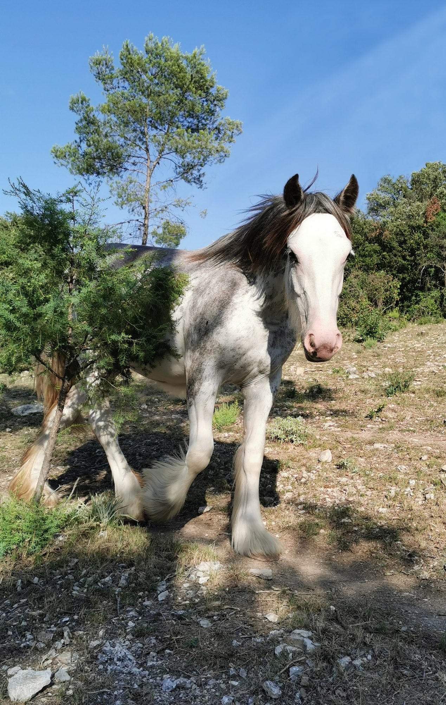
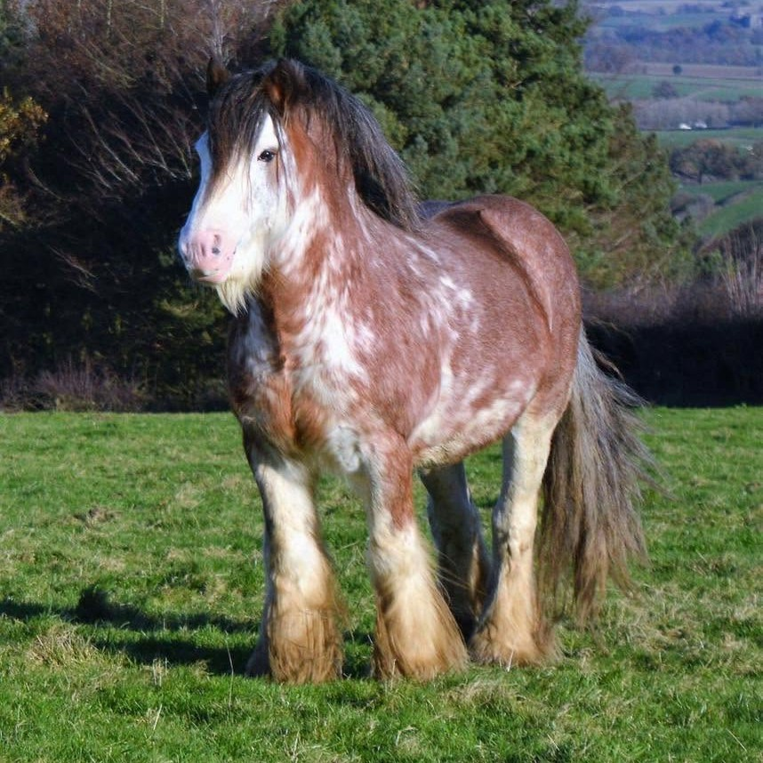

Galerie
En images


Jument · Irish Cob PP · Noire Sabino
Jinba est la première pouliche à porter l'affixe Humming Cob. Derrière ses yeux bleus se cache une véritable aventurière, toujours prête à tester ses limites — et parfois notre sang-froid. Elle a grandi longtemps auprès de nous, bien au-delà du sevrage, partageant les premières années de cette aventure naissante.
Sa propriétaire l'a rencontrée alors que nous vivions encore à L'Isle-sur-la-Sorgue. Malgré la distance, elle venait la voir grandir. Puis la vie a dessiné un chemin inattendu : notre déménagement dans le Gard les a finalement rapprochées. Aujourd'hui, Jinba poursuit son histoire à quelques kilomètres seulement de l'élevage. Une belle façon de garder un lien avec celle qui fut la première à porter le nom Humming Cob.
HC Jinba Ittaï a trouvé sa famille. ❤️🌸

Jinba Ittaï a trouvé sa place dans le cœur de Sandrine, après une visite à l'élevage.
Elle réside désormais à deux pas de nous — une belle façon de garder le lien avec la première pouliche à porter notre affixe.